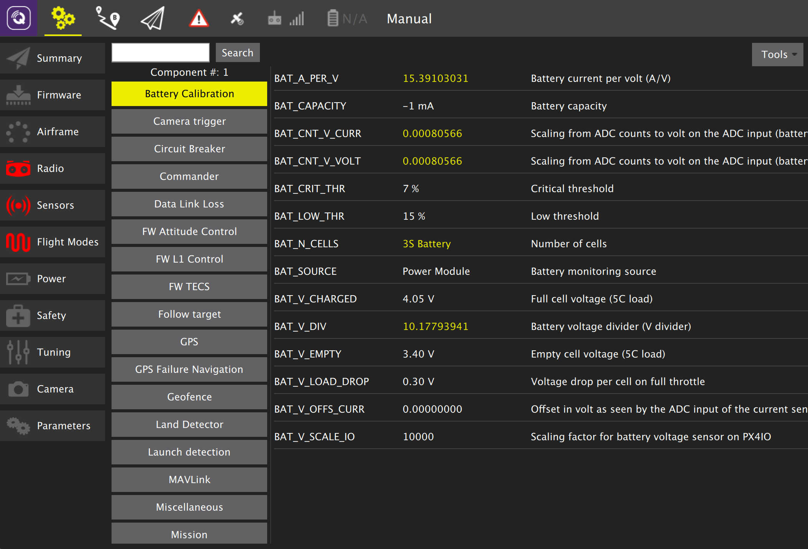
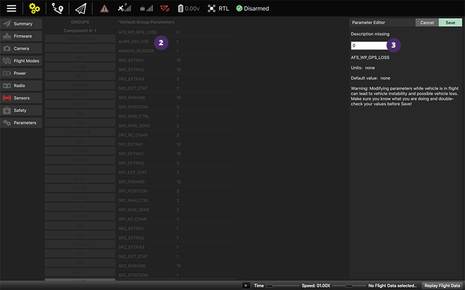
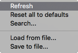

Parameters
 Note: This image is from a vehicle running PX4 Pro firmware. ArduPilot works similary, just the parameter set will differ.
The Parameters screen allows you to modify any of the parameters associated with the vehicle.
The parameters are organized in groups. You can select a group of parameters to view by clicking on one of the group buttons to the left. In the example image the "Battery Calibration" group is selected.
Changing a value
To change the value of a parameter click on the parameter value in the list. This will open a side dialog which allows you to update the value and also provides additional detailed information on the parameter.
 Note: This image is out of date.
Searching for a parameter
Enter the string you are searching for in the text field to right of the Search button and then click Search. This will show you a list of parameters which match you search criteria. Search will not only match on parameter names, but it will also match on parameter descriptions.
Tools

 Note: These images are out of data.
You can select additional options from the Tools menu.
Refresh
Refresh the parameter values by re-requesting all of them from the vehicle.
Reset all to defaults
Reset all parameters to their original default values.
Load from file / Save to file
Load parameters from an existing file or Save your current parameter settings to a file.